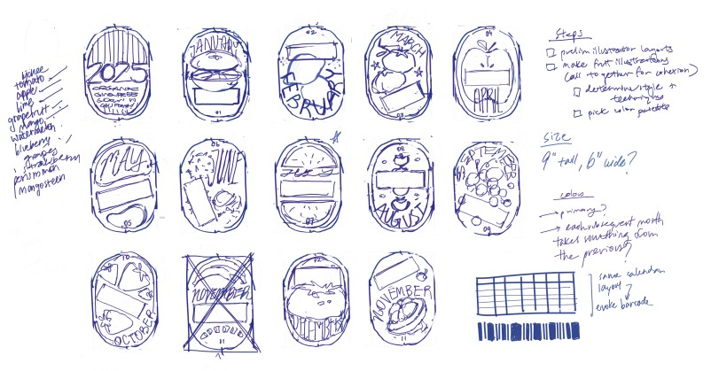
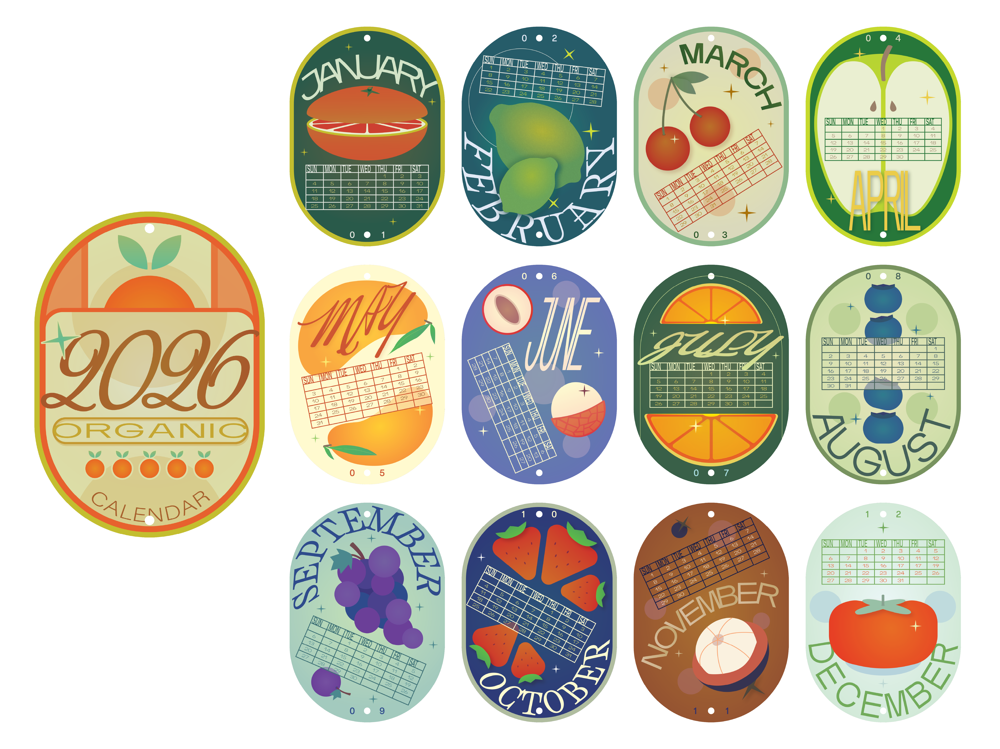
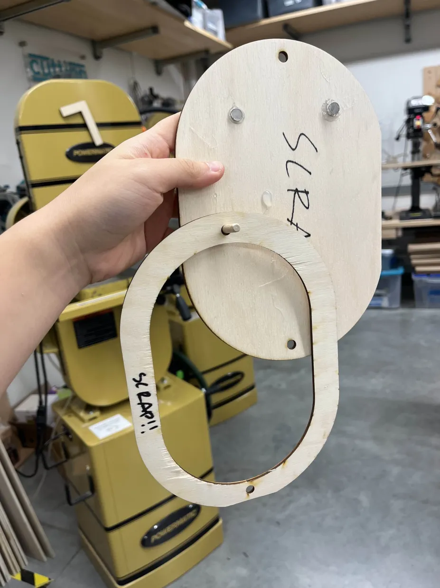
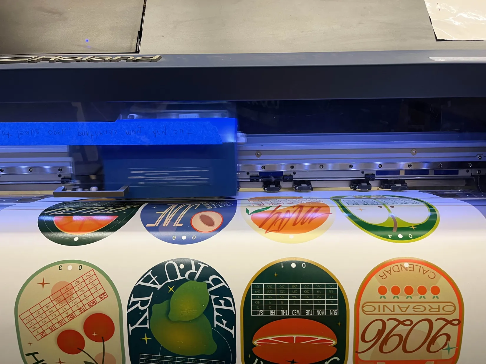
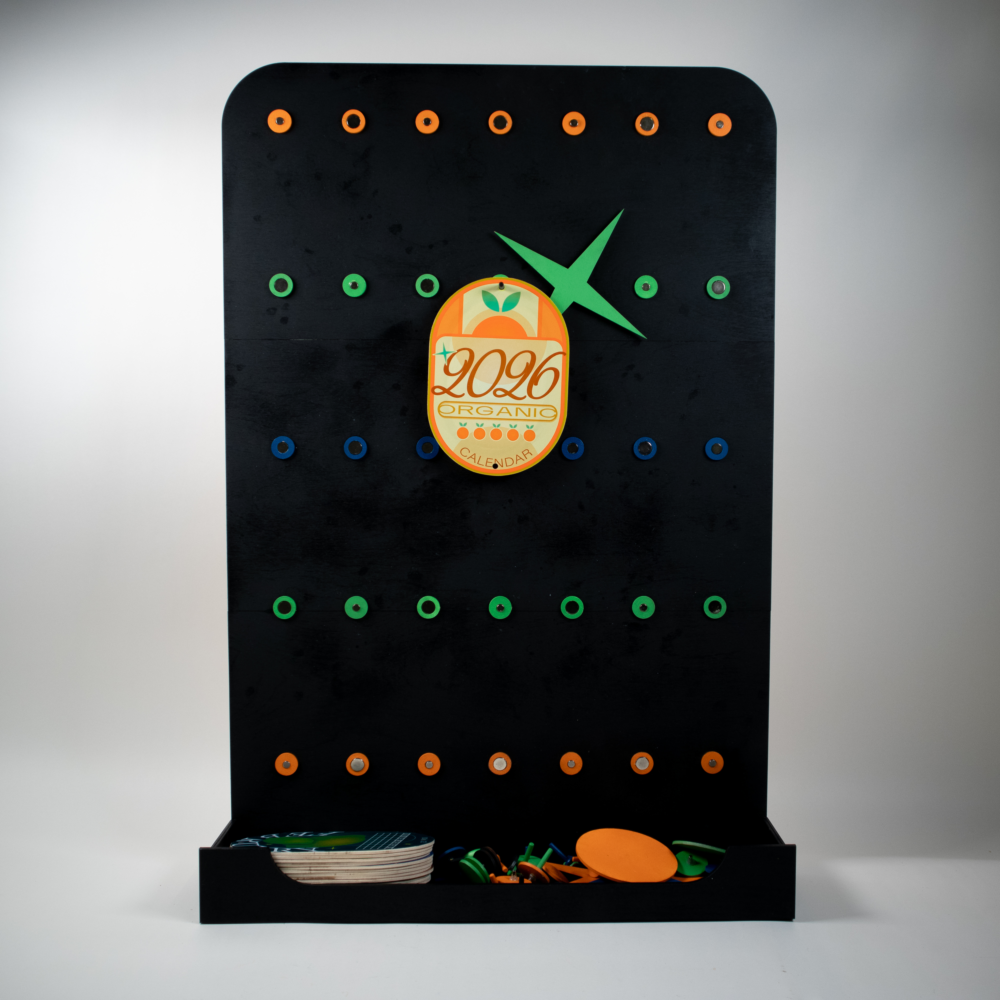
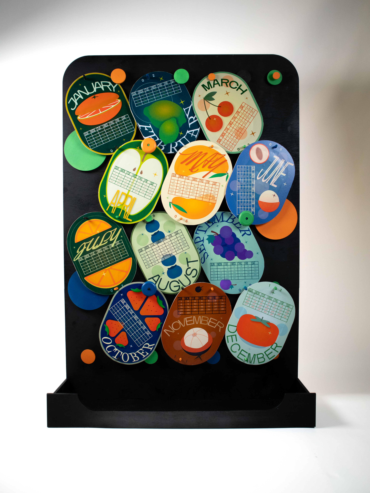
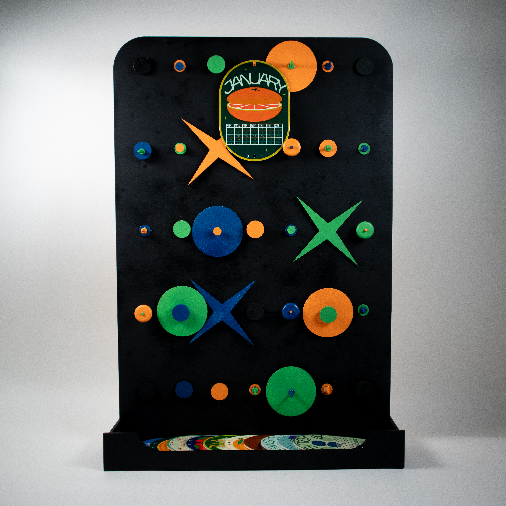
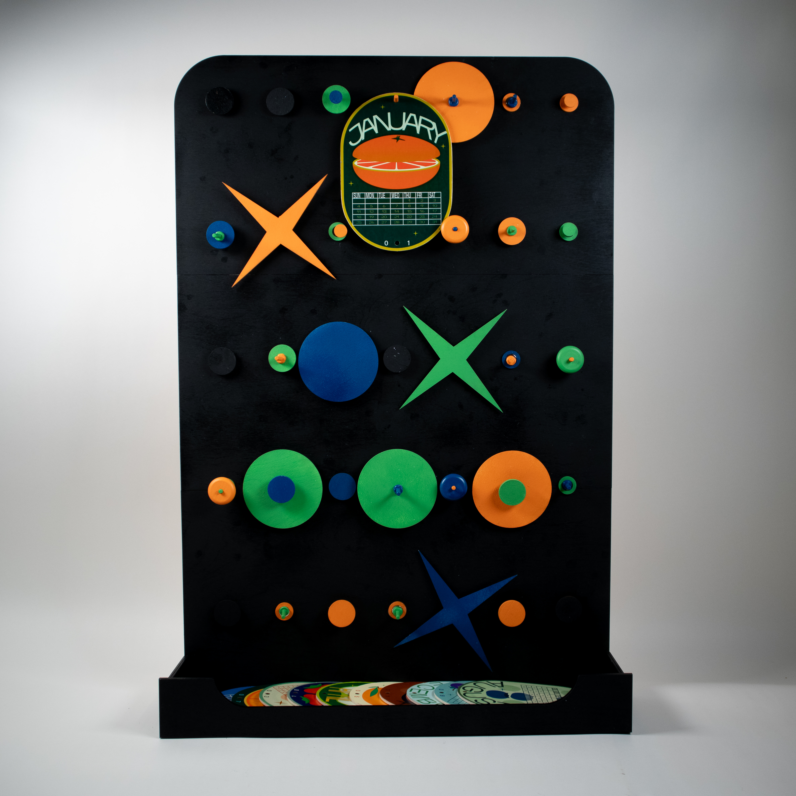
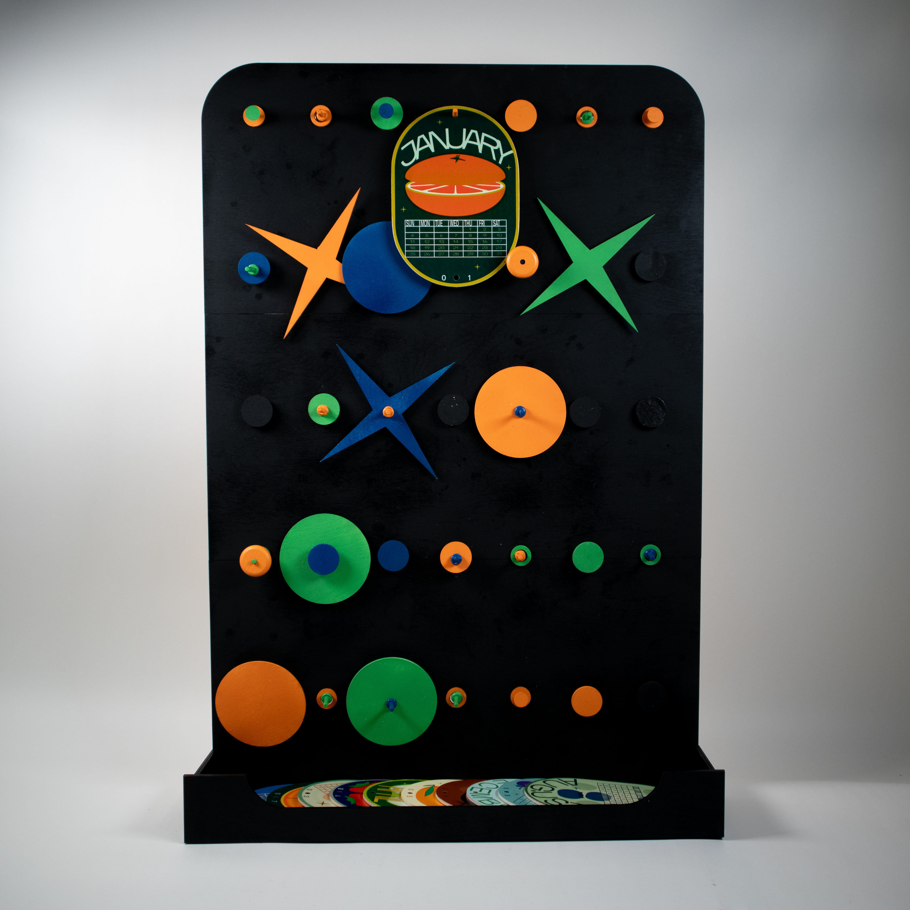
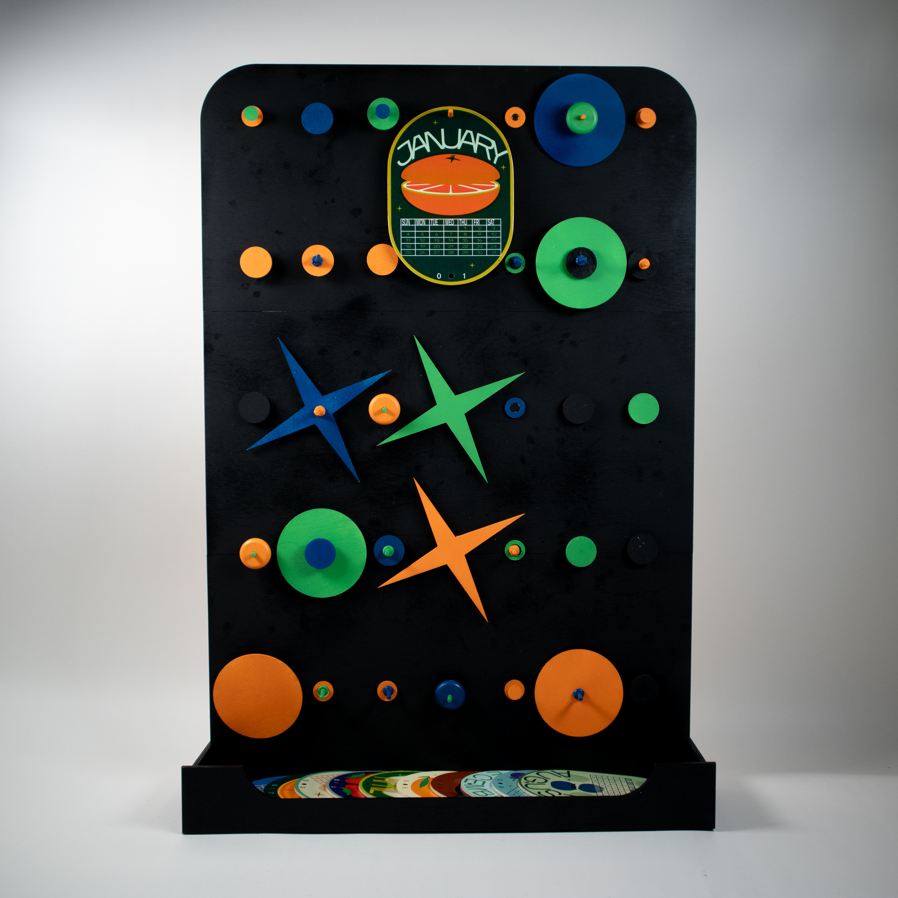

2026 Fruit Calendar
Independent Project
Spring 2025
Spring 2025
Graphic Design, Product Design

[Note: this project page is a work in progress]
I was inspired to create this calendar by the blunt, graphic style of the pill-shaped stickers found on fruit and produce, combining playful illustrations with dynamic colors and a cohesive visual language.
<-- initial ideation sketches
I was inspired to create this calendar by the blunt, graphic style of the pill-shaped stickers found on fruit and produce, combining playful illustrations with dynamic colors and a cohesive visual language.
<-- initial ideation sketches
Below are my final designs, made primarily in Adobe Illustrator. I incorporated common design motifs such as a
four-point star and repeated typefaces, while varying the composition and colors enough to make each month feel distinct:

I'm currently working on converting this calendar to a physical form factor and exploring what that interaction could look like. My first prototype
consisted of a pegboard-inspired magnet grid in which the user could move around the months as they pleased, alongside other graphic shapes.
First, I tested with paper and scrap wood:
First, I tested with paper and scrap wood:


Then, I got to work on a more fleshed out prototype:
I liked that this board enabled the user to be a bit creative and rapidly lay out different compositions, essentially generating new art pieces whenever they wanted:

I liked that this board enabled the user to be a bit creative and rapidly lay out different compositions, essentially generating new art pieces whenever they wanted:





However, I felt that some of the interaction elements were a bit cumbersome, and the object didn't feel entirely necessary. Thus,
I'm currently working on a prototype of a different idea that takes inspiration from circular clock faces and can be mounted on a wall. Updates soon!